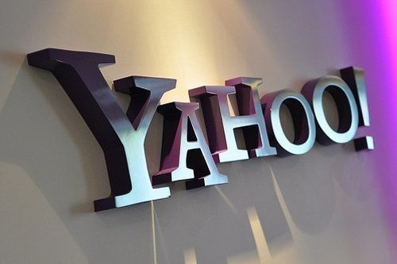

This section of the website is about the news in Cyber Security, although not the most recent events. However, this page will cover the top 5 news events that have happened in the last 15 years. If you want more up to date information, please visit bleeping computerBleeping Computer
This is still concidered on of the biggest hacks in history, even over a decade later. The reason it still is one of the biggest hacks of all time is because, in 2013, a hacker group who is beleived to work for the Russian state, broke into Yahoo and stole ALL 3 billion Yahoo user account information, and it went undetected for 3 years. Another hack happened in 2014, which allowed the hackers to gain access to private information of another 500 million accounts. There has yet to be a hack that tops this spacific event in tech history.
